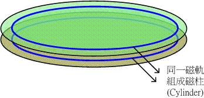

|
|
||||||||||||||
since2012/04/23 |
 |
|
||||||||||||
 |
|
|
|
|
||||||||||
|
|
|
|
|
|||||||||||
|
|
|
|
||||||||||||
|
|
|
|
|
|
|
|
|
|
|
|
|
|
|
|
本文目前已不再更新，更新文章请参考 这里
| 我们在前面的档案权限介绍的章节当中，提到很多的权限与属性的观念，那么接下来要了解的是，这些属性是记录在硬盘的那个地方？这里就要特别了解到 Linux 文件系统( filesystem )是如何记录档案，与档案是如何被读取的啰！而要了解整个文件系统的观念，就不能不知道硬盘的组成组件！所以，在这个章节当中，我们由最基础的硬盘组成组件介绍起，并介绍 inode 与链接文件等基本知识，以及如何利用开机即可挂载的方式来使我们的各个 partition 可以在开机时就已经进行好挂载的动作喔！ |
认识硬盘：
：物理组成
：磁盘分区
：文件系统
：Linux 的文件系统(inode)
：Linux 文件系统的运作
查看硬盘或目录的容量：df, du,
连结档的介绍： ln,
切割与格 式化硬盘：fdisk, mke2fs, e2label, mknod,
检查硬盘坏轨与数据同步化写入：fsck, badblocks, sync,
关于软盘开机片： mkbootdisk, fdformat,
各式扇区的挂载：mount, 软盘, 光盘, Windows扇区, Windows 中文扇区, 新硬盘, umount,
设定开机时即挂载的方式：/etc/fstab
虚拟内存 Swap： swap partition, swap file, dd, mkswap, swapon, swapoff,
磁盘效能：hdparm,
附录一：第二延伸文件系统 ext2
附录二：为何选择 ext3 呢
本章习题练习
图一、硬盘盘示意图

图二、磁柱示意图
首先，硬盘里面一定会有所谓的磁头 ( Head )在进行该硬盘盘上面的读写动作；而当磁头固定不动，硬盘盘转一圈所画出 来的圆就是所谓的磁道( Track )；而如同我们前面刚刚提到的，一块硬盘里面可能具有多个硬盘盘，所有 硬盘盘上面相同半径的那一个磁道就组成了所谓的磁柱( Cylinder )。例如上图二所示 意，在两个硬盘盘上面的同一个磁道就是一个磁柱啦！这个磁柱也是磁盘分区( partition )时的最小单位了；另外，由圆心向外划直线，则可将磁道再细分 为一个一个的扇区( Sector )，这个扇区就是硬盘盘上面的最小储存物理量了！通常一个 sector 的大小约为 512 Bytes 。以上就是整个硬盘的基本组件。
在了解了硬盘的物理组件之后，再接着下来介绍的就是硬盘的分割( Partition )啰！为什么要进行硬盘分割啊？！因为我们必须要告诉操作系统：『我这 块硬盘可以存取的区域是由 A 磁柱到 B 磁柱』，如此一来，操作系统才能够控制硬盘磁头去 A-B 范围内的磁柱存取数据；如果没有告诉操作系统这个信息，那么操作系统就无法利用我们的硬盘来进行数据的存取了，因为操作系统将无法知道他要去哪里读取数据 啊！这 就是磁盘分区( Partition )的重点了：也就是记录每一个分割区( Partition )的起始与结束磁柱！好了，那么这个分割区的起始与结束磁柱的 数据放在哪里呢？！那就是我们在 Linux 安装与多重引导技巧 那个章节提到的 主要启动扇区( Master Boot Recorder, MBR )啰！事实上， MBR 就是在一块硬盘的第零轨上面，这也是计算机开机之后要去利用该硬盘时，必须要读取的第一个区 域！在这个区域内记录的就是硬盘里面的所有分割信息，以及开机的时候可以进行该机管理程序的写入的处所啊！所以，当一个硬盘的 MBR 坏掉时，由于分割的数据不见了，呵呵，那么这个硬盘也就几乎可以说是寿终正寝了，因为操作系统不知道该去哪个磁柱上读取数据啊～～
那么 MBR 有什么限制呢？他最大的限制来自于他的大小不够大到储存所有分割与开机管理程序的信息，因此，他仅提供最多四个 partition 的记忆，这就是所谓的 Primary (P)与 Extended (E) 的 partition 最多只能有四个的原因了。所以说，如果你预计分割超过 4 个 partition 的话，那么势必需要使用 3P + 1E ，并且将所有的剩余空间都拨给 Extended 才行( 记得呦！ Extended 最多只能有一个 )，否则只要 3P + E 之后还有剩下的空间，那么那些容量将成为废物而浪费了，所以结论就是『如果您要分割硬 碟时，并且已经预计规划使用掉 MBR 所提供的 4 个 partition ( 3P + E 或 4P )那么磁盘的全部容量需要使用光，否则剩下的容量也不能再被使用』。不过，如果您仅是分割出 1P + 1E 的话，那么剩下的空间就还能再分割两个 partition ！
在告知系统我的 partition 所在的起始与结束磁柱之后，再来则是需要将 partition 格式化为『我的操作系统认识的文件系统( Filesystem )』啰！因为每个操作系统认识的 filesystem 并不相同！例如 Windows 操作系统在默认状态下就无法认识 Linux 的文件系统 ( 这里指 Linux 的标准文件系统 ext2 )。所以当然要针对我们的操作系统来格式化 partition 啰！
我们可以说，每一个 partition 就是一个 Filesystem ，那么一个 partition 是否可以具有两个 Filesystem 呢？！理论上应该是不行的！因为每个文件系统都有其独特的支持方式，例如 Linux 的 ext3 就无法被 Windows 系统所读取！而你将一个 partition 格式化的时候，总不能格式化为 ext3 也同时格式化为 fat32 吧？！那是不可能的啊！
不论是哪一种 filesystem ，数据总是需要储存的吧！既然硬盘是用来储存数据的，想当然尔，数据就必须写入硬盘啦！刚刚我们提到硬盘的最小储存单位是 sector ，不过数据所储存的最小单位并不是 sector 喔，因为用 sector 来储存太没有效率了。怎么说呢？因为一个 sector 只有 512 Bytes ，而磁头是一个一个 sector 的读取，也就是说，如果我的档案有 10 MBytes ，那么为了读这个档案，我的磁头必须要进行读取 (I/O) 20480 次！
为了克服这个效率上的困扰，所以就有逻辑区块( Block )的产生了！逻辑区块是在 partition 进行 filesystem 的格式化时，所指定的『最小储存单位』，这个最小储存单位当然是架构在 sector 的大小上面( 因为 sector 为硬盘的最小物理储存单位啊！ )，所以啦， Block 的大小为 sector 的 2 的次方倍数。此时，磁头一次可以读取一个 block ，如果假设我们在格式化的时候，指定 Block 为 4 KBytes ( 亦即由连续的八个 sector 所构成一个 block )，那么同样一个 10 MBytes 的档案，磁头要读取的次数则大幅降为 2560 次，这个时候可就大大的增加档案的读取效能啦！
不过，Block 单位的规划并不是越大越好喔！怎么说呢？因为一个 Block 最多仅能容纳一个档案！这有什么问题呢？举例来说好了，假如您的 Block 规划为 4 KBytes ，而您有一个档案大小为 0.1 KBytes ，这个小档案将占用掉一个 Block 的空间，也就是说，该 Block 虽然可以容纳 4 Kbytes 的容量，然而由于档案只占用了 0.1 Kbytes ，所以，实际上剩下的 3.9 KBytes 是不能再被使用了，所以，在考虑 Block 的规划时，需要同时考虑到：
- 档案读取的效能
- 档案大小可能造成的硬盘空间浪费
因此，在规划您的磁盘时，需要留意到您主机的用途来进行规划较佳！例如 BBS 主机由于文章较短，也就是说档案较小，那么 Block 小一点的好；而如果您的主机主要用在储存大容量的档案，那么考虑到效能，当然 Block 理论上，规划的大一点会比较妥当啦！
Superblock：如同前面说的，当我们在进行磁盘分区( partition )时，每个磁盘分区槽( partition )就是一个文件系统( filesystem )，而每个文件系统开始的位置的那个 block 就称为 superblock ，superblock的作用是储存像是文件系统 的大小、空的和填满的区块，以及他各自的总数和其他诸如此类的信息等等，这也就是说，当您要使用这一个磁盘分区槽( 或者说是文件系统 )来进行数据存取的时候，第一个要经过的就是 superblock 这个区块了，所以啰， superblock 坏了，您的这个磁盘槽大概也就回天乏术了！
看完了上面的说明，您应该对于硬盘有一定程度的认识了！好了，那么接下来就是要谈一谈 Linux 的文件系统( Filesystem )啰！我们这里以 Linux 最标准的 ext2 这个文件系统来作为说明。还记得我们在 Linux 文件属性与目录配置 那个章节提到的，在 Linux 系统当中，每个档案不止有档案的内容数据，还包括档案的种种属性，例如：所属群组、所属使用者、能否执行、档案建立时间、档案特殊属性等等。由于 Linux 操作系统是一个多人多任务的环境，为了要保护每个用户所拥有数据的隐密性，所以文件属性的增加是在所难免的！在标准的 ext2 文件系统当中，我们将每个档案的内容分为两个部分来储存，一个是档案的属性，另一个则是档案的内容。
为了应付这两个不同的咚咚，所以 ext2 规划出 inode 与 Block 来分别储存档案的属性( 放在 inode 当中 )与档案的内容( 放置在 Block area 当中 )。当我们要将一个 partition 格式化( format )为 ext2 时，就必须要指定 inode 与 Block 的大小才行，也就是说，当 partition 被格式化为 ext2 的文件系统时，他一定会有 inode table 与 block area 这两个区域。
Block 已经在前面说过了，他是数据储存的最小单位。那么 inode 是什么？！简单的说， Block 是记录『档案内容数据』的区域，至于 inode 则是记录『该档案的相关属性，以及档案内容放置在哪一个 Block 之内』的信息。 简单的说， inode 除了记录档案的属性外，同时还必须要具有指向( pointer )的功能，亦即指向档案内容放置的区块之中，好让操作系统可以正确的去取得档案的内容啊！底下几个是 inode 记录的信息(当然不止这些)：
- 该档案的拥有者与群组(owner/group)；
- 该档案的存取模式；
- 该档案的类型；
- 该档案的建立日期(ctime)、最近一次的读取时间(atime)、最近修改的时间 (mtime)；
- 该档案的容量；
- 定义档案特性的旗标(flag)，如 SetUID...；
- 该档案真正内容的指向 (pointer)；
至于一个 inode 的大小为 128 bytes 这么大！好了，那么我的 Linux 系统到底是如何读取一个档案的内容呢？底下我们分别针对目录与档案来说明：
目录：
当我们在 Linux 下的 ext2 文件系统建立一个目录时， ext2 会分配一个 inode 与至少一块 Block 给该目录。其中，inode 记录该目录的相关属性，并指向分配到的那块 Block ；而 Block 则是记录在这个目录下的相关连的档案(或目录)的关连性！
档案：
当我们在 Linux 下的 ext2 建立一个一般档案时， ext2 会分配至少一个 inode 与相对于该档案大小的 Block 数量给该档案。例如：假设我的一个 Block 为 4 Kbytes ，而我要建立一个 100 KBytes 的档案，那么 linux 将分配一个 inode 与 25 个 Block 来储存该档案！
由上面的说明当中，我们可以知道要读取一个树状目录下的档案时，操作系统会先读取该档案所在目录的 inode ，并取得该目录的关连区域(在 Block 区域里面)，然后根据该关连资料读取该档案所在的 inode ，并再进一步经由档案的 inode 来取得档案的最后内容！举个例子来说，假设我们要读取 /etc/crontab 这个档案，整个读取的流程是如何呢？可由底下的图三来作为说明：
图三、读取 /etc/crontab 的简易流程示意。
- 操作系统根据根目录( / )的相关资料可取得 /etc 这个目录所在的 inode ，并前往读取 /etc 这个目录的所有相关属性；
- 根据 /etc 的 inode 的资料，可以取得 /etc 这个目录底下所有档案的关连数据是放置在哪一个 Block 当中，并前往该 block 读取档案的关连性内容；
- 由上个步骤的 Block 当中，可以知道 crontab 这个档案的 inode 所在地，并前往该 inode ；
- 由上个步骤的 inode 当中，可以取得 crontab 这个档案的所有属性，并且可前往由 inode 所指向的 Block 区域，顺利的取得 crontab 的档案内容。
一块 partition 在 ext2 底下会被格式化为 inode table 与 block area 两个区域，所以在图三里面，我们将 partition 以长条的方式来示意，会比较容易理解的啦！而读取 /etc/crontab 的流程为：
整个读取的流程大致上就是这样，不过这里有几点小事情要提醒一下：
- 在目录底下的档案数如果太多而导致一个 Block 无法容纳的下所有的关连性数据时，Linux 会给予该目录多一个 Block 来继续记录关连数据；
- 一个档案所占用的 Block 都会记录在该档案所在的 inode 内，所以硬盘的磁头可以直接去读取各个 Block ，除非该档案所储存的各个 Block 真的很离散(事实上不太可能发生)，否则在 Linux 的 ext2 当中，是不需要进行碎片整理的！
- inode 数量与 Block 的大小在格式化的时候就已经被设定好了，通常一个 Block 的大小为 4 Kbytes，至于 inode 的数量则依据不同的设定而异，基本的设定为 ( 硬盘大小 / 一个 inode 所控制的容量 ) 。举例来说，我有一个 1 GBytes 的硬盘，我希望该硬盘中 inode 的数量只要 block 的一半就好了，那么就可以设定一个 inode 控制的容量为 8 Kbytes ，则 inode 数量共有： ( G * 1024M/G * 1024K/M )/( 8 K ) = 131072 个 inode 啰！而 inode table 则占去了 131072 * 128 byte = 16777216 bytes = 16384 Kbytes。也就是说，这一个 1GB 的硬盘还有没任何数据时，就少了 16 MBytes 的容量啦！(用在 inode table 上面)。
- 因为一个 inode 只能记录一个档案的属性，所以 inode 数量比 block 多是没有意义的！举上面的例子来说，我的 Block 规划为 4 Kbytes ，所以 1GB 大概就有 262144 个 4Kbytes 的 block ，如果一个 block 对应一个 inode 的话，那么当我的 inode 数量大于 262144 时，多的 inode 将没有任何用处，徒然浪费硬盘的空间而已！另外一层想法，如果我的档案容量都很大，那么一个档案占用一个 inode 以及数个 block ，当然 inode 数量就可以规划的少很多啦！
- 格式化 Linux 的 ext2 文件系统，可以使用 mke2fs 这个程序来执行！
- 当 block 大小越小，而 inode 数量越多，则可利用的空间越多，但是大档案写入的效率较差；这种情况适合档案数量多，但是档案容量小的系统，例如 BBS 或者是新闻组( News )这方面服务的系统；
- 当 Block 大小越大，而 inode 数量越少时，大档案写入的效率较佳，但是可能浪费的硬盘空间较多；这种状况则比较适合档案容量较大的系统！
Linux 文件系统的运作：
好了，知道了 Linux 标准的 ext2 文件系统的状况后，再来了解一下那么 Linux 系统在运作时，他是如何进行数据的存取呢？！我们知道，整个计算机主机当中，输出输入 (I/O) 最快速的应该是 CPU 的快取了，然后则是主存储器，至于硬盘的存取则比前两个慢上许多。为了让 Linux 加快整个系统的存取效率，因此在 Linux 上面通常采取异步处理( asynchronously )的方式。什么是异步呢？举例来说：『当系统读取了某一个档案， 则该档案所在的 区块数据会被加载到内存当中，所以该磁盘区块就会被放置在主存储器的缓冲快取区中，若这些区块的数据被改变时，刚开始数据仅有主存储器的区块数据会被改 变，而且在缓冲区当中的区块数据会被标记为” Dirty “，这个时候磁盘实体区块尚未被修正！所以亦即表示，这些” Dirty “区块的数据必需回写到磁盘当中，以维持磁盘实体区块上的数据与主存储器中的区块数据的一致性。』
为什么要这么做呢？这是因为主存储器的运作速度比起硬盘来实在是快太多了，万一系统当中有一个档案相当的大，而又持续性的存取，那么由于较慢的硬盘存取速 度，将使得整个 Linux 速度被拖垮，所以才会使用异步方式的数据处理啊！不过，也由于硬盘与主存储器的数据可能没有同步化，因此，如果 Linux 不正常关机( 例如跳电或者是当机 )时，则由于数据尚未回写入磁盘当中，会导致系统在再次开机时，会花相当多的时间进行磁盘检验，同时也有可能造成磁盘的损毁啊！
了解了硬盘之后，接下来当然要知道我的 Linux 系统里面还剩下多少磁盘空间啰！嗯，那么在文字接口底下有什么方法可以查看目前的磁盘最大容许容量、已经使用掉的容量、目前所在目录的已使用容量？还有还 有， 怎么知道目前目录底下使用掉的硬盘容量呢？以及如何查询目前的 inodes 数目？呵呵！底下我们就来谈一谈主要的两个指令：df 查看已挂载磁盘的总容量、使用容量与 inode 等等
du 查看档案使用掉的容量有多少？
df
语法：
| [root @tsai
/root ]# df -[ikm]
参数说明： -i: 使用 i-nodes 显示结果 -k: 使用 KBytes 显示结果 -m: 使用 MBytes 显示结果 范例： [root @test /root ]# df -k <==以 KB 显示磁盘空间 Filesystem 1k-blocks Used Available Use% Mounted on /dev/hda1 2118832 904600 1106600 45% / /dev/hda3 497861 37525 434632 8% /disk1 none 31220 0 31220 0% /dev/shm /dev/hda5 101089 4127 91743 5% /proxy1 /dev/hda6 101089 4127 91743 5% /proxy2 /dev/hda2 1004052 38360 914688 5% /var /dev/fd0 1423 1405 19 99% /mnt/floppy |
这是用来显示目前磁盘空间的指令！需要注意的是，由于我们的档案或者是外挂的磁盘都是加在『 / 』底下，所以当根目录没有空间的时后，嘿嘿！你的 Linux 系统大概就是挂了吧～（说个笑话！当初 我们系上有个研究生在管理 Sun 的工作站，是别研究室的，他的硬盘明明有好几 GB ，但是就是没有办法将几 MB 的数据 copy 进去，他就去跟老板讲说机器坏了！嘿！明明才来维护过几天而已为何会坏了！结果老板将维护商叫来骂了 2 小时左右吧！后来，维护商发现原来硬盘的『总空间』还有很多，只是某个扇区填满了，偏偏该研究生就是要将数据 copy 去那个扇区！呵呵！后来那个研究生就被命令『再也不许碰 Sun 主机』了～～）当然啰！你可以将你的数据放置在加挂的硬盘中， 那么如何知道目前哪一个磁盘还有多少空间呢？！
这里要请大家再复习一下，我们的硬盘扇区规划中， primary 扇区每一颗硬盘只允许 4 个，其他的就放置在 Extended 扇区中了！而，硬盘的代号与 IDE 的插槽是有关系的！如果忘记了，那就回去安装 Linux 那一章复习一下吧！好了！假设我只有一棵硬盘，且放在 IDE 的 master ，那么我的硬盘就是 /dev/hda 啰！而在这颗硬盘中的分割扇区就可以由 /dev/hda1 开始向上加！
OK，那么使用 df -k 之后，出现的上面的数据中，可以知道我的硬盘更分为 /dev/hda1, /dev/hda2, /dev/hda3, /dev/hda5 与 /dev/hda6 ，咦！ /dev/hda4 跑去哪里了！呵呵！其实 /dev/hda4 通常就是 Extended 扇区啦！而后面的 /dev/hda5, /dev/hda6 等扇区就是由 /dev/hda4 所切出来的！所以 /dev/hda5 + /dev/hda6 = /dev/hda4 ！当然，如果还有没有显示出来的，例如 Swap ，则 /dev/hda4 还有可能更大呦！
那么来解释一下上面的数据吧！
- Filesystem：说的是扇区啦！另外，如果你有加挂软盘的 话，那么就 会出现如上表中最后一行啰！
- 1k-blocks：说明底下的数字单位是 1KB 呦！如果你使用 df -m 则这一栏会出现 1M-blocks 啰！
- Used ：顾名思义，就是使用掉的硬盘空间啦！
- Available ：也就是剩下的磁盘空间大小；
- Use% ： 就是磁盘的使用率啦！如果使用率高达 90% 以上时，最好需要注意一下了，免得容量不足造成系统问题（例如最容易被灌爆的 /var/spool/mail 这个放置邮件的磁盘！）。
- Mounted on ：就是磁盘挂载的目录所在啦！例如 /dev/hda5 是挂载在 /proxy1 底下，而 /var 是 /dev/hda2 这个扇区啰！
语法：
| [root @test
/root ]# du [-abckms] [目录名称]
参数说明： [目录名称] 可以省略，如果省略的话，表示要统计目前所在目录的档案容量 -a :全部的档案与目录都列出来！默认值是指列出目录的值！ -b :列出的值以 bytes 输出 -c :最后加总 total ！ -k :列出的值以 KB 输出 -m :列出的值以 MB 输出 -s :只列出最后加总的值！ 范例： [root @test /root]# du -m <==列出 /root 底下的目录与档案所占的容量以 MB 输出 [root @test /root]# du -s /home <==将 /home 底下的目录与档案的容量加总后输出，这里只会输出总容量！ |
在 Windows 底下可以使用档案总管来管理你的磁盘，在 Linux 底下也可以轻易的以 du 来知道目前磁盘的档案容量耶！在默认的情况下，容量的输出是以 KB 来设计的，如果你想要知道目录占了多少 MB ，那么就使用 -m 这个参数即可啰！而，如果你只想要知道该目录占了多少容量的话，呵呵，使 用 -s 就可以啦！
什么是连结档呢？其实连结档有点类似 Windows 底下的『快捷方式』！也就是很多的连结档案( link file )其实都指向同一个来源档案( source file )！不过，在所有的文件类型当中，连结档算是比较难理解的一部份了！因为连结档还分成 Hard link 与 symbolic link 两种，这两种连结档在架构上是完全不一样的咚咚，底下就来好好的谈一谈先！
Hard Link：在前一节当中，我们提到档案的读取方式为：(1)先由一层一层的目录取得档案相关的关连数据，(2)再到对应的 inode 取得档案的属性，以及档案内容数据所在的 Block ，(3)最后到 Block area 取得档案的资料。那么 hard link 怎么制作档案的连结呢？！很简单， Hard Link 只是在某个目录下新增一个该档案的关连数据而已！
举个例子来说，我的 /home/vbird/crontab 为一个 hard link 的档案，他连结到 /etc/crontab 这个档案，也就是说，其实 /home/vbird/crontab 与 /etc/crontab 是同一个档案，只是有两个目录( /etc 与 /home/vbird )记录了 crontab 这个档案的关连数据罢了！也就是说，我由 /etc 的 Block 所记录的关连数据可知道 crontab 的 inode 放置在 A 处，而由 /home/vbird 这个目录下的关连数据， crontab 同样也指到 A 处的 inode ！所以啰， crontab 这个档案的 inode 与 block 都没有改变，有的只是有两个目录记录了关连数据。
一般来说，使用 hard link 设定链接文件时，磁盘的空间与 inode 的数目都不会改变！由上面的说明来看，我们可以知道， hard link 只是在某个目录下的 block 多写入一个关连数据，所以当然不会用掉 inode 与磁盘空间啰！(注：其实可能会改变的，那就是当目录的 Block 被用完时，就可能会新加一个 block 来记录，而导致磁盘空间的变化！不过，一般 hard link 所用掉的关连数据量很小，所以通常不会改变 inode 与磁盘空间的大小喔！ )
由于 hard link 是在同一个 partition 上面进行数据关连的建立，所以 hard link 是有限制的：
- 不能跨 Filesystem；
- 不能 link 目录。
Symbolic Link：相对于 hard link ， Symbolic link 可就好理解多了，基本上，他就是在建立一个独立的档案，而这个档案会让数据的读取指向他 link 的那个档案内容！由于只是利用档案来做为指向的动作，所以，当来源档被删除之后，symbolic link 的档案会『开不了』，会一直说『无法开启某档案！』。这里还是得特别留意，这个 Symbolic Link 与 Windows 的快捷方式可以给他划上等号，由 Symbolic link 所建立的档案为一个独立的新的档案，所以会占用掉 inode 与 block 喔！
由上面的说明来看，似乎 hard link 比较安全，因为即使某一个目录下的关连数据被杀掉了，也没有关系，只要有任何一个目录下存在着关连数据，那么该档案就不会不见！举上面的例子来说，我的 /etc/crontab 与 /home/vbird/crontab 指向同一个档案，如果我删除了 /etc/crontab 这个档案，该删除的动作其实只是将 /etc 目录下关于 crontab 的关连数据拿掉而已， crontab 所在的 inode 与 block 其实都没有被变动喔！不过，不幸的是，由于 Hard Link 的限制太多了，包括无法做『目录』的 link ，所以在用途上面是比较受限的！反而是 Symbolic Link 的使用方面较广喔！好了，说的天花乱坠，看您也差不多快要昏倒了！没关系，实作一下就知道怎么回事了！要制作连结档就必须要使用 ln 这个指令呢！
语法：
| [root @test
/root ]# ln [-s] [来源档] [目的檔]
参数说明： -s :提供 symbolic line 的连结！ 如果直接以 ln 不加任何参数的话，那么就属于 hard link 啰！ 范例： [root @test /root]# mkdir test [root @test /root]# cd test [root @test test]# cp /usr/bin/passwd . 0. 原本的信息：
1. Hard Link
信息：
2. Symbolic
Link 信息：
3. 用 more 来试试看是怎样？！
|
要注意啰！使用 ln 如果不加任何参数的话，那么就是 Hard Link 啰！如同上面的情况，增加了 hard link 之后，可以发现 link 那一栏属性增加了！而如果这个时候砍掉 passwd 会发生什么事情呢？呵呵！ passwd-hard 的内容还是会跟原来 passwd 相同，但是 passwd-soft 就会找不到该档案啦！就是这样！了解了吗？！还有，跟 cp 也不一样呦！因为虽然 Hard Link 的档案看起来是有容量的，但是基本上还是指向原来的档案，所以啰，整体容量是没有增大的啦！
而如果 ln 使用 -s 的参数时，就做成差不多是 Windows 底下的『快捷方式』的意思( Symbolic Link，较常用！ )不过，需要特别注意的是， Linux 的 link 与 Windows 的快捷方式是不一样的东西！举个例子说，当你在 Windows 建立一个快捷方式时，你可以在这个快捷方式内修改任何数据，而你的原始数据并不会跟着变！不过，当你修改 Linux 下的 link 档案时，则更动的其实是『原始档』，呵呵，所以不论你的这个原始档被连结到哪里去，只要你修改了连结档，呵呵！原始档就跟着变啰！以上面为例，由于你使用 -s 的参数建立一个名为 passwd-soft 的档案，则你修改 passwd-soft 时，其内容与 passwd 完全相同，并且，当你按下储存之后，被改变的将是 passwd 这个档案！
此外，如果你做了底下这样的连结：
ln –s /bin /root/bin那么如果你进入 /root/bin 这个目录下，『请注意呦！该目录其实是 /bin 这个目录，因为你做了连结档了！』所以，如果你进入 /root/bin 这个刚刚建立的链接目录，并且将其中的数据杀掉时，嗯！ /bin 里面的数据就通通不见了！这点请千万注意！并不是 /root 底下的资料都是 root 的！还需要注意一下该属性才行！
基本上， Symbolic link 的用途比较广，所以您要特别留意 symbolic link 的用法呢！未来一定还会常常用到的啦！
对于一个系统管理者 ( root ) 而言，硬盘的的管理是相当重要的一环，尤其近来硬盘已经渐渐的被当成是消耗品了.....好了，如果我们要 partition 一颗新的硬盘，要使用什么程序来工作？而如果已经 partition 好了，又要如何来格式化呢？刚刚我们提到了 inodes 这个东西，那么使用格式化 ( format ) 的软件可以怎样的来格式化好我们所需要的 inodes 的大小呢？这里我们就来谈一谈啰！fdisk 硬盘切割 partition 的工具
mke2fs 就是 Linux 底下重要的 format 格式化的工具
e2label 修改硬盘的 label （表头名称） 的工具！
mknod 新增硬件对应文件的工具！
| [root @test
/root ]# fdisk [-l] [装置名称]
参数说明： -l ：直接列出该硬盘装置的 partition table 范例： [root @test root]# fdisk /dev/hdb<==分割我的 hdb 磁盘，记得后面不接数字 Command (m for
help): m <==印出说明内容
Command (m for help): p <==印出目前的磁盘分区状态 Disk /dev/hdb:
128 heads, 63 sectors, 523 cylinders
Device Boot Start
End Blocks Id System
Command (m for help):q <==不储存离开 fdisk [root @test root]# fdisk -l /dev/hdb<==直接秀出这颗硬盘当中的 partition Disk /dev/hdb:
128 heads, 63 sectors, 523 cylinders
Device Boot Start
End Blocks Id System
|
还记得我们刚刚在认识硬盘里面提到的部分内容 吗？其实 fdisk 最主要的工作就是在修改『 partition table 』而已，并没有实际的将硬盘切切割割的啦！他会定义出某一个 partition 是由 n1 磁柱到 n2 磁柱之间这样的信息！因此，如果硬盘切割错误时，只要在 format 之前将 partition tables 复原，那么就可以将硬盘原来的数据救回来啰！所以，一个好的管理员，有时候也会将自己的 partition table 记录下来，以备不时之需呀！这个 fdisk 只有 root 才能执行，此外，请注意，使用的『装置名称』请不要加上数字，因为 partition 是针对『整个硬盘装置』而不是某个 partition 呢！所以执行 fdisk /dev/hdb1 就会发生错误啦！要使用 fdisk /dev/hdb 才对！底下说一说进入 fdisk 之后的几个重要参数吧！
注：您可以使用 fdisk 在您的硬盘上面胡搞瞎搞的进行实际操作，都不打紧，但是请『千万记住，不要按下 w 即可！』离开的时候按下 q 就万事无妨啰！
- 硬盘信息：通 常我们需要知道这颗硬盘的信息时，直接按下『 p 』就可以了解了，例如上面的例子中，我的一棵硬盘切割呈上面的模样，而我的 System 除了一个 swap 之外，其他的都是属于 ext2 的呦！
- 删除扇区： 如果我要删除一个以存在的扇区时，就需要：
- fdisk /dev/hdb ：先进入 fdisk 画面；
- p ：先看一 下扇区的 信息，假设要杀掉 /dev/hdb1；
- d ：这个时 候会要你 选择一个 partition ，就选 1 啰！
- w ：储存到磁盘数据表中，并离开 fdisk ；当然啰，如果你反悔了该怎么办！？呵呵，直接按下 q 就可以取消刚刚的删除动作了！
| [root@test
root]# fdisk /dev/hdb
Command (m for help): p Disk /dev/hdb:
128 heads, 63 sectors, 523 cylinders
Device Boot Start
End Blocks Id System
Command (m for
help): d
Command (m for help): p Disk /dev/hdb:
128 heads, 63 sectors, 523 cylinders
Device Boot Start
End Blocks Id System
|
- fdisk /dev/hdb ：先进入 fdisk 画面中；
- n：新增一个磁 区，这个 时候系统会问你，如果您已经具有 extended 扇区时，那么系统会问您，您要新增的是 Primary 还是Logical ，而如果您还没有 extended ，那么系统仅会问你要新增 Primary 还是 Extended，除此之外，如果您已经用完了四个 P + E 的话，那么就仅有 Logical 可以选择啦！请再回到刚刚说明硬盘的地方再次的复习一下吧！如果是选择 primary 的话，请按 p ，否则请按 e 或 l 。
- p ：由于选 择为 primary 所以就会按下 p 啰！
- 1-4 ：primary 只允许四个，（仍然比 Windows 只允许一个好的多了！），所以这里请按尚未被使用的那一个扇区啰！
- w ：同样的储存离开啰！
| [root @test
root]# fdisk /dev/hdb
Command (m for help): p <==印出信息 Disk /dev/hdb:
128 heads, 63 sectors, 523 cylinders
Device Boot Start
End Blocks Id System
Command (m for
help): n <
==选择新增
Command (m for help): p <==再印出信息 Disk /dev/hdb:
128 heads, 63 sectors, 523 cylinders
Device Boot Start
End Blocks Id System
Command (m for
help): n <
==再次新增
Command (m for help): p Disk /dev/hdb:
128 heads, 63 sectors, 523 cylinders
Device Boot Start
End Blocks Id System
|
- 操作环境的说明： 以 root 的身份进行硬盘的 partition 时，最好是在单人维护模式底下比较安全一些，此外，在进行 fdisk 的时候，如果该硬盘某个 partition 还在使用当中，那么很有可能系统核心会无法重载硬盘的 partition table ，解决的方法就是将该使用中的 partition 给他卸除，然后再重新进入 fdisk 一遍，重新写入 partition table ，那么就可以成功啰！
- 注意事项： 另外，请注意一下，虽然一颗硬盘最大的逻辑扇区可以到达 64 颗( 总数，包含 1~4 的 primary partition )，但 是并非所有的 Linux distribution 都会将所有的逻辑扇区对应的磁盘代号都写入系统当中，以 Red Hat 为例，他仅列出 1~16 个代码，其他的您就得自己动手做啦！至于 Mandrake 的话，他则是使用自己侦测的，当您以 fdisk 设定好了 partition table 之后，磁盘对应的磁盘代号就会自动的在您的 /dev/ 里头设定完成啰！不过，有的时候您还是得自己设定一下磁盘代码啦！如何设定呢？就使用 mknod 这个指令吧！
语法：
| [root @test
/root ]# mke2fs [-b block-size] [-i inode-size]
[root @test /root ]# mke2fs [-c] [root @test /root ]# mke2fs [-L] [root @test /root ]# mke2fs [-j] 参数说明： -b :在设定每个数据区块占用的大小，目前支持的大小有 1024, 2048, 4096 三种！ -i :设定 inode 值！ -c :检查错误磁盘，会比较慢呦！ -L :规划设定这个扇区的 label （表头名称） -j :建立 ext3 这个 journaling 的文件格式 范例： [root @test /root]# mke2fs /dev/hda5 以 mke2fs 预设的条件( ext2 )格式化 /dev/hda5 这个装置 [root @test
/root]# mke2fs -c /dev/hda5
[root @test
/root]# mke2fs –j -b 8192 -i 8192 /dev/hda5
[root @test
/root]# mke2fs /dev/fd0
<==格式化软盘呀！
This filesystem
will be automatically checked every 35 mounts or
|
这是用来将磁盘格式化成 Linux 系统文件的指令。基本上，只要写入对的装置档案就可以了。例如我们要格式化软盘的话，或是新的硬盘 hda5 等等！这个指令通常是在新的硬盘上面切割完之后，再加以格式化的！另外，如果要将旧的扇区格式化成 ext2 格式的话，就使用这个指令吧！进行当中显示的讯息有点像上面的最后几行，系统会显示目前的格式化的默认值！而如果要设定不同的 Block ( 就是前面提到的一个逻辑 sector 的大小 )，就可以使用 -b 这个参数！请注意啰，预设的情况下， Block 是 4096！此外，您也可以自定义 inode table 呢！而，当没有指定的时 候， mke2fs 使用 ext2 为格式化文件格式，若加入 –j 时，则格式化为 ext3 这个 Journaling 的 filesystem 呦！
语法：
| [root @test
/root ]# e2label [/dev/hd...] [label_name]
参数说明： 范例： [root @test /root]# e2label /dev/hda1 / 上面的案例为将 /dev/hda1 这个磁盘槽的名字设定为 / 啦！ |
这个东西也挺有趣的，主要的功能是用来修改『磁盘的表头数据』，也就是 label 啦。那是甚么东西呢？如果你使用过 Windows 的档案总管的话，那么应该会晓得，每个驱动器号后面都有个名称吧， 呵呵！那个就是 label 啰。这个东西除了有趣之外，也会被使用到一些配置文件案当中， 举例来说，当我们在挂载磁盘的时候，除了利用磁盘的代号之外 (/dev/hdxx) 也可以直接利用磁盘的 label 来作为挂载的磁盘挂载点喔！基本上，就是那个 /etc/fstab 档案的设定啰！
语法：
| [root @test
root]# mknod [device] [bcp] [Major] [ Minor]
参数说明： b :设定节点成为周边储存设备档 c :设定节点成为接口设备如鼠标等 p :建立 FIFO 范例： [root@test /]# cd /dev [root@test dev]# ll hda* lr-xr-xr-x 1 root root 32 Oct 19 13:04 hda -> ide/host0/bus0/target0/lun0/disc lr-xr-xr-x 1 root root 33 Oct 19 13:04 hda1 -> ide/host0/bus0/target0/lun0/part1 lr-xr-xr-x 1 root root 33 Oct 19 13:04 hda2 -> ide/host0/bus0/target0/lun0/part2 [root@test dev]# ll ide/host0/bus0/target0/lun0/ total 0 brw------- 1 root root 3, 0 Jan 1 1970 disc brw------- 1 root root 3, 1 Jan 1 1970 part1 brw------- 1 root root 3, 2 Jan 1 1970 part2 [root@test dev]# mknod hda3 b 3 3<==注意到啰！那个 3 3 就是上面的数值 [root@test dev]# ll hda* lr-xr-xr-x 1 root root 32 Oct 19 13:04 hda -> ide/host0/bus0/target0/lun0/disc lr-xr-xr-x 1 root root 33 Oct 19 13:04 hda1 -> ide/host0/bus0/target0/lun0/part1 lr-xr-xr-x 1 root root 33 Oct 19 13:04 hda2 -> ide/host0/bus0/target0/lun0/part2 brw-r--r-- 1 root root 3, 3 Oct 22 17:16 hda3 |
mknod 在平时是几乎不会使用到的，但是某些时候，确实有可能会出问题！这个指令的设定方法中，必需要取得设备的 Major ( 主要 ) 与 Minor ( 次要 ) 的数值后，才能够设定完整！上面是我的 Mandrake 9.0 在 P-166 MMX 上面的情况，由于之前仅分割成两槽，所以仅到达 /dev/hdb2 而已，如果要 hdb3 的话，那么除了 fdisk 完成之后， Mandrake 会自行多设定一个之外，否则就要自己来啰！而由这个装置的内容说明上面，我们可以这样定义一下：
|
|
|
|
|
|
|
|
|
|
|
|
|
|
|
|
|
|
|
|
现在也建立好了新的 partition 了，也 format 好了，那么有没有其他的关于硬盘的工作需要来进行呢？有的，就是需要怎样来检查硬盘有没有坏轨呢？那个就是 fsck 这个工具的用途啦！此外，您会发现到，在 / 这个目录底下 ( 其实只要有挂载硬盘的那个目录底下都有这个目录 ) 会有一个特殊的目录，就是『 lost+found 』这个目录啦！对的！就是当你处理完 fsck 之后，如果程序有发现到任何的错误的档案，就会将该档案的数据给他丢到这个目录当中，嘿嘿！所以当你发现你的 Linux 目录当中有这个档案时，不要担心，那个是正常的啦！而且只有挂载 partition 的目录才会有这个默认的目录啰！
还有，由于在 Linux 系统当中，为了增加系统效能，通常系统默认就是一些数据会写在内存当中，并不会直接将数据写入硬盘里面，这是因为内存的速度要比硬盘快上若干倍呀！但 是有个问题就发生了，万一系统由于『跳电』或者是其他的莫名原因，造成系统的 shutdown 时，唉呀！怎么办？！系统就完蛋啦！所以啰，我们需要在某些特定的时候让数据直接回存到硬盘之中呀！了乎！这里提供几个惯用的指令，其中，那个 fsck 是相当重要的，请参考其用法啰！fsck 检查硬盘有没有坏轨的工具
badblocks 跟 fsck 一样，但是 fsck 的功能比较强，所以这个指令可以不学！
sync 将 内存中的数据给他同步化写入硬盘中
fsck
语法：
| [root @test
/root ]# fsck [-Aar] [装置名称]
参数说明： -A :依据 /etc/fstab 的内容，将所有的装置都扫瞄一次（通常开机过程中就会执行此一指令） -a :自动修复检查到的有问题的扇区，所以你不用一直按 y 啰！ -r :一定要让使用者决定是否需要修复，这与上一个 -a 刚好相反！ 范例： [root @test /root]# fsck -a /dev/hda5 <==检查 /dev/hda5 这个扇区有没有错误！ |
这是用来检查与修正硬盘错误的指令。注意：通常只有身为 root 且你的系统有问题的时候才使用这个指令，否则在正常状况下使用此一指令，可能会造成对档案的危害！通常使用这个指令的场合都是在 系统出现极大的问题，导致你在 Linux 开机的时候得进入单人单机模式下进行维护的行为时，才必须使用此一指令！另外，如果你怀疑刚刚格式化成功的硬盘有问题的时后，也可以使用 fsck 来检查一下硬盘呦！其实就有点像是 Windows 的 scandisk 啦！此外，由于 fsck 在扫瞄硬盘的时候，可能会造成部分 filesystem 的损坏，所以『要执行 fsck 的时候，请将该 partition umount 一下！』，然后再去执行！
常常我们会发现，在比较老旧的机器上（例如我的 p-166），如果主机不正常的关机（例如跳电啰！），那么硬盘很可能会出现错误的状况！这个时候 Linux 就无法正常的开机！这个时候就需要输入 root 的密码，以登入单人维护模式（run level 1），然后下达 fsck -a /dev/hdxxx 来检查你的硬盘！等到确认成功之后，就使用 reboot 来重新启动吧！
| [root @test
/root ]# badblocks [-svw] [装置名称]
参数说明： -s :在屏幕上列出进度 -v :可以在屏幕上看到进度 -w :使用写入的方式来测试，建议不要使用此一参数，尤其是待检查的装置已有档案时！ 例： [root @test /root]# badblocks -sv /dev/hda1 |
| [root @test
/root ]# sync
参数说明： 例： [root @test /root]# sync; sync |
在正常的状况中，由于为了增加系统的效率，因此，很多时候进行中的程序产生的程序之临时文件都不会直接存至磁盘驱动器当中，而是记忆在内存当中！由于内存 的数据传递速度比磁盘驱动器快了几十倍，所以如此一来将有助于整个系统的效率！！然而这也产生了一个困扰，那就是当你的系统不正常关机的时候，可能会使得一些 已经经过改变，却还没有存入磁盘中的数据遗失（因为还在内存当中！）所以这个时候 sync 的功能就相当的大了！因为他可以直接将系统暂存在内存当中的数据回存写入磁盘当中，呵呵！很棒吧！但是需要注意你的系统核心 (kernel) 必须要有支持 sync 才行（目前几乎一定都会支持的啦！）
嗯！搞定了上面的动作了没？！好了，如果搞定了的话，现在我们来制作一个可以开机 的软盘开机片好了！怎么制作呢？呵呵！就是利用 mkbootdisk 啰！
mkbootdisk 制作软盘开机片
fdformat 这是用来『低阶格式化』软盘的工具
mkbootdisk
语法：说明：
[root @test /root ]# mkbootdisk --device /dev/fd0 `uname -r`
参数说明：
--device :后面接装置！通常接的就是软盘啦 /dev/fd0 ！
范例：
[root @test /root]# mkbootdisk --device /dev/fd0 `uname -r` <==建立可开机软盘！！
这是制作启动盘的指令，其中，『 `uname -r` 』是目前 Linux 系统所使用的核心版本，如果你有多个核心版本的话，你以可以直接输入核心版本。例如在我的系统中，旧的核心还是有保留的，所以我都会至少有两个核心，在我 管理的某部主机中，核心为 2.4.7 及 2.4.18 ，那么如果我要直接以 2.4.18 来开机的话，就可以使用mkbootdisk --device /dev/fd0 2.4.18建立软盘开机片一直是个好主意！他可以在你求助无门的时候给你莫大的帮助喔！所以，建立一个新的软盘开机片是一个好主意啦！
- fdformat
语法：说明：
[root @test /root ]# fdformat [装置名称]
参数说明：
例：
[root @test /root]# fdformat /dev/fd0H1440
这是用来『低阶格式化』软盘的指令。（注意：软盘的装置文件为 /dev/fd0 ）！在上面的装置档案为 /dev/fd0H1440 ， 其中加在 /fd0 之后的 H1440 为表示 1.44MB 的软盘容量！在低阶格式化之后，还要将软盘的文件格式化为 Linux 的 ext2 之型态，则需要使用 mke2fs 指令！
要将上面我们所建立起来的硬盘或软盘正式的在 Linux 上面启用时，一定需要将他挂载上文件系统！而所谓的『挂载点』则是该硬盘所在的目录，且在该目录下的所有目录都归在 该硬盘所有！假设一个情况好了，我们的 / 为 /dev/hda1 而 /home 为 /dev/hda2 ，那么在 /home/test 底下的咚咚就也都归 /dev/hda2 这个 partition 所有啰！而需要特别留意的是，由于挂载文件系统需要挂载点，所以挂载的时候得先建立起挂载的目录才行！除此之外，如果您要用来挂载的目录里面并不是空的， 那么挂载了文件系统之后，那么原目录下的东西就会暂时的消失。举个例子来说，假设您的 /home 原本是属于根目录 / 底下的 partition 所有，底下原本就有 /home/test 与 /home/vbird 两个目录。然后你想要加入新的硬盘，并且直接挂载 /home 底下，那么当您挂载上新的 partition 时，则 /home 显示的是该 partition 的内容，至于原 先的 test 与 vbird 这两个目录就会暂时的被隐藏掉了！注意喔！并不是被覆盖掉，而是 暂时的隐藏了起来，等到 partition 被 umount 之后，则该目录的内容就会再次的跑出来啦！
- mount
语法：说明：
[root @test /root ]# mount [-ahlV]
[root @test /root ]# mount -t type /dev/hdxx /mountpoint
[root @test /root ]# mount -o [options]
[root @test /root ]# umount /mountpoint
参数说明：
-a :依照 /etc/fstab 的内容将所有相关的磁盘都挂上来！
-h :只列出 mount 相关的参数，并不挂载任何装置
-l :列出目前已经挂载的装置、文件系统名称与挂载点！
-V :列出 mount 的版本信息
type :将后面 /dev/hdxx 这个装置以 type 的文件格式挂载到 /mountpoint 这个点，
常见的 type 有底下几个：
vfat, msdos :这个是支持 Windows 系统的文件格式，尤其是 vfat 常用！
ext, ext2 :这个就是 Linux 的主要文件格式啦！
iso9660 :光驱的文件格式
nfs, ntfs, ufs :Windows 2000 使用 NTFS 格式呀！
-o :这个参数后面接的咚咚可多了！可用的资料可不少呢！
rw ：让 mount 的扇区为可擦写
suid ：允许该扇区可以配置文件案为 SUID 的状态！
exec ：允许该扇区可以执行 binary 的档案！
auto ：允许该扇区可以使用 mount -a 的参数设定！
nouser ：禁止其他人(非 root 之用户)使用挂载功能！这是默认值！
async ：允许扇区可以进行异步记录（内存与硬盘不同步！最常用！）
defaults：同时具有 rw, suid, dev, exec, auto, nouser, async 这些功能的设定值！
nosuid ：不许该扇区具有 SUID 的文件属性！
ro ：设定为只读属性！
remount ：让系统本来挂载的扇区重新被挂载！
范例：
[root @test /root]# mount -a
[root @test /root]# mount -t iso9660 /dev/cdrom /mnt/cdrom<==挂上光盘
[root @test /root]# mount -t vfat /dev/fd0 /mnt/floppy <==挂上 windows 文件系统的软盘
[root @test /root]# mount -t ext2 /dev/fd0 /mnt/floppy <==挂上 Linux 文件系统的软盘
[root @test /root]# mount -t ext2 /dev/hdc6 /home <==挂上 Linux 文件格式硬盘
[root @test /root]# mount -o remount,rw / <==让根目录重新挂载为可读！
这个指令只有 root 才能执行！如果你不想要单独的将某个磁盘挂上来，那么执行：mount -a就可以依照 /etc/fstab的的参数内容将所有的磁盘给他重新挂上去！此外，需要注意 的是，由于 Linux 系统中，每一个路径都有可能是一个独立的扇区系统，所以需要将每个扇区系统都挂上各自的挂载点！详细的内容请回去参考一下上一篇 Linux 文件系统 的说明。另外，由于各个扇区的文件系统可能并不相同，所以您必须先要了解该扇区的文件系统，这样才可以进行 mount 的工作！如何知道该磁盘的文件格式呢？可以使用 fdisk 来显示的功能即可！
请注意呦！由于 mount 之后的文件格式是没有办法直接被拿掉的！尤其在使用 fsck 检查你的硬盘时，更是不能挂上硬盘的！而如何将硬盘至挂载点卸除呢？呵呵，就直接使用 umount 即可啰！
底下分别谈一谈各个装置的挂载情况：这里可能先要强调一个观念，在 Windows 底下，磁盘分区是以 A, B, C, D, .... 等等的方式来划分的，然而在 Linux 或 Unix 系统之下，却是以目录来代表，也就是说，一个目录很可能就是一个扇区了！ 举个例子来说，通常 Linux 默认的软盘挂载的地点在 /mnt/floppy 这里！呵呵！那么如果你需要软盘的数据时，就将 /dev/fd0 这一个装置（前面提过啰！这个是周边存取装置的一个设备文件类型）挂上 /mnt/floppy 就可以啦！然后你进入到 /mnt/floppy 就可以读取软盘的数据啰！OK！在这里也必须要介绍一下 mount 这个指令喔！
- 挂载软盘：
很多朋友常常会使用到软盘，尤其是在网络有问题的时候，那么如何使用 Linux 将软盘挂上来呢？！首先，您给先了解你的磁盘档案的格式，例如 Linux 的文件格式（ ext2 ）与 Windows 的文件格式（ vfat ）是不一样的！分别可以使用如下的方式挂上来：
[root @test /] # mount -t ext2 /dev/fd0 /mnt/floppy<==Linux 格式
[root @test /] # mount -t vfat /dev/fd0 /mnt/floppy<==Windows 格式
[root @test /] # umount /mnt/floppy<==将软盘驱动器卸除
所以啰！即使是 Windows 格式的档案，在 Linux 底下仍然是可以读取的到的呦！另外，要注意的是，即使你使用软盘完毕之后，一定要将 /mnt/floppy 卸除之后才可以取出软盘片喔！不然系统会一直告诉你发生错误啰！而在卸除 /mnt/floppy 的时候，你一定不能在该目录底下，否则会发生错误讯息喔！而如果加载的格式不符合，系统也不会将该软盘挂上来的呦！好了，那么怎么制作 ext2 的软盘呢？简单的很，就使用 mke2fs /dev/fd0 就行啦！
- 挂载光盘！
在某些 Linux distribution 底下，例如 Red Hat 7.2 在预设的状态下是将 CDROM 视为一个模块，默认的核心并没有将他加载，所以，如果你需要在 Red Hat 7.2 里面挂载 CDROM 的话，有两个解决的方法：
一个是直接将 CDROM 的模块加载系统中，这个动作比较简单，而且你也可以将这个指令直接写到 /etc/rc.d/rc.local 里面去即可！
[root @test / ]# modprobe cdrom
[root @test / ]# modprobe ide-cd
[root @test / ]# mount -t iso9660 /dev/cdrom /mnt/cdrom
[root @test / ]# umount /mnt/cdrom
前两行是模块的加载，而第三行是挂载 CDROM ，第四行则是卸除！此外，由于预设的 CDROM 挂载就是以 iso9660 的 type 来做的，所以你也可以直接写成 mount /dev/cdrom /mnt/cdrom 就可以啰！
另外一个解决的方法是将 CDROM 的模块编译进核心当中！又有两种方式，一个是直接下载新的核心来编译，另一个则是直接以 Red Hat 出的更新版的核心来直接升级就可以啦！如果是使用 up2date 的话，那么升级核心是很简单的啦！
- 挂载 Windows 扇区：
如果万一你在安装系统的时候忘记将 Windows 的 VFAT 格式的扇区 mount 上你的 Linux 时，该怎么办？！这种现象最常发生在多系统共存的环境中！例如再原有的 Windows 98 或 Win2000 上面安装 Linux ，但是结果却忘记将该扇区挂载上来！嗯！这样需要重新安装吗？！当然不需要了！又不是被入侵！那么该如何挂载上来呢？！就如同前面说的，由于一个目录可能 代表了一个扇区，因此你必须要先建立一个扇区，然后再将此扇区挂载上你的 Linux 目录，就可以啦！另外，由于需要将扇区挂在目录下，所以你还得需要了解你的 Windows 扇区是在哪一个硬盘周边中喔！如何知道你的 Windows 扇区呢？就使用 fdisk 吧！假设你的 Windows 是在 Primary IDE 的硬盘，那么应该就是 /dev/hda 啰！则你可以这样做：
[root @test / ]# fdisk –l /dev/hda
Disk /dev/hda: 255 heads, 63 sectors, 524 cylinders
Units = cylinders of 16065 * 512 bytesDevice Boot Start End Blocks Id System
/dev/hda1 1 268 2152678+ 83 Win95 FAT32
/dev/hda2 * 269 395 1020127+ 83 Linux
/dev/hda3 396 459 514080 83 Linux
/dev/hda4 460 524 522112+ 5 Extended
/dev/hda5 460 472 104391 83 Linux
/dev/hda6 473 485 104391 83 Linux
/dev/hda7 486 498 104391 82 Linux swap
/dev/hda8 499 511 104391 83 Linux
/dev/hda9 512 524 104391 83 Linux
使用 fdisk 指令的话就可以知道你的 Win95 FAT32 的扇区在哪一个，在上表中，显示的是 /dev/hda1 这一个扇区啰！那么假设我要将 Windows 的目录建置在 /mnt/win98 里面呢？就这样做吧：
[root @tsai / ]# mkdir /mnt/win98
[root @tsai / ]# mount -t vfat /dev/hda1 /mnt/win98
[root @tsai / ]# mount -t vfat -o iocharset=cp950 /dev/hda5 /mnt/win98
如此一来就将 Windows 的系统挂到 Linux 里面啰！简单吧！请注意，上面那个第三行所使用的参数可以让您的 Windows 98 的扇区当中的档案显示出正确的中文呦！
- 安装新硬盘：
再来个新问题！那么我如果想要安装一颗新硬盘呢？呵呵，也是很简单啦，就跟在 Windows 底下一样！需要先 fdisk 然后在 format ，之后就可以顺利的挂上 Linux 系统啰！假设我安装的硬盘在 Primary 的第二个 IDE 上面，也就是 /dev/hdb 上，那么整个步骤应该就会是：
[root @test / ]# fdisk /dev/hdb
....... （以下省略！直接以 fdisk 分割好硬盘啦！）[root @test / ]# mke2fs /dev/hdb1
在 Linux 中的 format 是 mke2fs 这一个指令喔！
上面的指令 在将你的硬盘扇区格式化成 Linux 的 ext2 格式啦！[root @test / ]# mkdir /disk2
建立一个目 录名称为 /disk2 ，预计用来挂载你的新硬盘[root @test / ]# mount -t ext2 /dev/hdb1 /disk2
将硬盘挂上 Linux 系统啰！
- umount
语法：说明：
[root @test root]# umount [-f] [device|mount_point]
参数说明：
-f ：强制将该文件系统退出，最常使用在无法退出的 NFS 文件系统中了！
范例：
[root @test root]# umount /home
就是直接将 mount 上来的文件系统给他卸除即是！卸除之后，可以使用 df 看看是否还存在呢？！
刚刚上面说了许多，那么可不可以在开机的时候就将我要的扇区都挂好呢？！这样我就不需要每次进入 Linux 系统都还要在挂载一次呀！当然可以啰！那就直接到 /etc/fstab 里面去修修就行啰！不过，在开始说明前，这里要先跟大家说一说系统挂载的一些限制：好了，那么我们进入 /etc/fstab 看一看吧：
- 根目录 / 是必须挂载的﹐而且一定要先于其它 mount point 被挂载进来。
- 其它 mount point 必须为已建立的目录﹐可以任意指定﹐但一定要遵守必须的系统目录架构原则。
- 所有 mount point 在同一时间之内﹐只能挂载一次。
- 所有 partition 在同一时间之内﹐只能挂载一次。
- 如若进行卸除﹐您必须先将工作目录移到 mount point(及其子目录) 之外。
[root @test / ]# more /etc/fstab
# History:
# ==================================================
# When Who What
# 2002/10/19 VBird This file had been modified by me.
# ==================================================
# device MountPoint filesystem parameters dump fsck
/dev/hda1 / ext3 defaults 1 1
/dev/hda2 swap swap defaults 0 0
LABEL=/backup /backup ext3 defaults 1 1
none /dev/pts devpts mode=0620 0 0
none /proc proc defaults 0 0
/dev/hda3 /mnt/win98 vfat defaults,iocharset=big5,codepage=950 0 0
我这个人比较龟毛一点，因为 Mandrake 9.0 的 /etc/fstab 档案排列方式蛮丑的，虽然每一栏之间只要以空格符分开即可，但就是觉得丑，所以通常我就会自己排列整齐，并加上批注符号，就是 # 字号，来帮我记忆这些信息！总共有六栏，分别来谈一谈吧！所以，假如我要新增加一个 /dev/hdb1 并且挂载在 /disk2 这个目录下的话，那么我就在该档案的最底加上一行：
- 扇区或标头：就是扇区啦！不过，如果是在安装的时候有给 予一个 label (标头) 的话，那么使用 label 也可以，例如上面的 LABEL=/backup 那一行。而如果是我们增加新的扇区的话，那么这里就必须要使用『扇区』了！例如新安装一个硬盘在 /dev/hdd1 当中，那么这里就写 /dev/hdd1 啰！那么如果我还是想要使用 label 来挂载呢？！就使用 e2label 来建立 label name 啦！ e2label 的用法在前一章有说明，忘了的话，快去看看先！
- 挂载的目录点：就是 mount 的挂载点啦！
- 该扇区的文件格式：目前 Linux 大都使用 ext2, ext3, reiserfs 等等的，不过，如果你有使用 Windows 的文件格式的话，那么就可以使用 vfat 啰！目前支持的格式还有 iso9660( 光盘 ), msdos, minix, nfs, swap 等等的文件格式；
- 文件格式参数区：这个就重要了！有哪些磁盘参数可以参考呢？ 在前一章的 mount 指令里面介绍了一些些，这里再更详细的提出说明如下：
参数 内容意义 async/sync
异步/同步是否允许磁盘与内存中的数据以同步写入的动作？使用 async 这个异步写入的方式会比较快速一些。 auto/noauto
自动/非自动在开机的时候是否自动挂载该扇区？既然设定在这个区域内了，当然希望开机的时 候自动挂载啰！ rw/ro
可擦写/只读让该扇区以可擦写或者是唯独的型态挂载上来，如果是 vfat 之类的扇区，您不想让 Linux 变更的话，那么使用 ro 也不错！能够提供有效的保护呢！ exec/noexec
可执行/不可执行限制在此文件系统内是否可以进行『执行』的工作？如果是纯粹用来储存数据的， 那么可以设定为 noexec 会比较安全，相对的，会比较麻烦！ user/nouser
允许/不许是否允许用户使用 mount 指令来挂载呢？一般而言，我们当然不希望 user 身份的人能使用 mount 啰，因为太不安全了，因此这里应该要设定为 nouser 啰！ suid/nosuid
具有suid/没有suid该文件系统是否允许 SUID 的存在？一般而言，如果不是 Linux 系统的扇区，而是一般数据的 partition ，那么设定为 nosuid 确实比较安全一些！毕竟有 SUID 是蛮可怕的一件事 usrquota 启动用户磁盘配额模式支持 grpquota 启动群组磁盘配额模式支持！ defaults 同时具有 rw, suid, dev, exec, auto, nouser, async 这些功能，所以默认情况中，使用这个即可！
另外，如果有兴趣的话，还可以加上类似『iocharset=big5,codepage=950』 这种额外的功能参数以启动中文编码的支持，更详细的数据可以 man mount 搜寻呢！
- 是否可以被 dump 指令备份：这一列在说明，使用 dump 指令来备份时时，该扇区是否跟着一起动作？如果没有数字的话则以 0 带入！由于我们希望有备份的功能，所以这里当然就开启( 1 )啰！
- 检验扇区：这个数字在用来以 fsck 检验扇区用的！在开机与关机的时候，通常 Linux 希望检验一下扇区，所以这里需要设定一下。通常 root （就是根目录 / 啦）需要设定为 1 ，而其他的文件系统（ filesystem ）就设定为 1 即可！当然啰！由于 proc 及 swap 与 windows 并不需要以 fsck 来检验，所以就可以设定为 0 啰！
/dev/hdb1 /disk2 ext2 defaults 1 1或者我直接在这个档案上面规划好之后，再下达： mount -a 那么程序就会自动的将 /etc/fstab 里面的信息读出，并且依据里面的情况来挂载扇区喔！如此一来，每次开机的时候都会自动的建立好对应的咚咚啦！
有经验的朋友大概都还蛮清楚的，就是 /etc/fstab 写错了的时候(最常发生在 quota 设定的时候)会造成无法开机的窘境，因此，通常我们都会把自己所想要的数据给他写在 /etc/fstab 之后，以 mount –a 驱动看看，此外，如果错误已经造成了呢？那也不要太担心，由于错误造成了，所以根目录 / 默认会变成只读属性，这个时候就得要进行 remount 的工作了，亦即下达：mount –n –o rw,remount /这样应该就可以将磁盘挂载成为可擦写了！
此外，您必须了解的是， /etc/fstab 写的是您的配置文件，但是目前的系统所挂载的信息则是记录在 /etc/mtab 这个档案中喔！这个档案会实时的进行更新，如果您重新手动挂载你的档案 系统，那么这个 mtab 就会跟着变动啰！
我们前面谈了很多各式各样的 filesystem ，不过，您晓得在安装的时候设定的那一个『虚 拟内存, swap 』要如何增加吗？举个简单的例子吧，我们的 Sun 主机上面，由于跑的程序太庞大了，通常 swap 需要开启到 1GB 左右，但是呢，有的时候还是会不够的！在 Linux 当中，如果您需要使用到很大量的虚拟内存，偏偏当初给的 swap 扇区不够大，那要怎么办呢？有什么方法可以来达成：怎么说呢？基本上，虚拟内存就是将硬盘规划出一个区间，让内存的数据可以经由硬盘来读取罢了，那么如果有 swap file 也就够了对不对！是呀！所以这里我们使用两种方法来尝试建立一下 swap 的扩增吧！
- 设定一个 swap partition ？
- 建立一个虚拟内存的档案？
- Swap partition ( 建立虚拟内存的扇区 )：
第一种正规的方法是『直接再加一棵硬盘，并且将其中某个扇区规划为 swap 的 filesystem 』，呵呵，说的容易，做起来更容易！实际的动作为：
- 以『 fdisk /dev/hd[a-d] 』先建立一个 partition ，还记得 fdisk 怎么做吗？回去复习一下吧！简单的来说，就是先 (1)建立一个 partition，然后 (2)将该 partition 的 ID 改为 82 这一个 swap 的磁盘文件格式代号就对 啦！这样这一步骤就 OK 啰！
- 以『 mkswap /dev/hd[a-d][1-16] 』的方式来将您刚刚建置出来的 partition 『格式化为 swap 的文件格式』，很简单吧！这样就格式化 OK 啰！
- 再来则是将 swap 启动，启动的指令为『 swapon /dev/hd[a-d][1-16] 』，这样就能启动了！很简单吧！这样 swap 就自动加入到内存容量里头去了！
- 那么如何将 swap 关掉呢？呵呵！很简单呀！就是直接给他 swapoff
就对了！
- 以 dd 指令来建立 swapfile ；
- 以 mkswap 来将 swapfile 格式化为 swap 的文件格式；
- 以 swapon 来启动该档案，使成为 swap ；
- 以 swapoff 来关闭该档案！
- 嗯！多说无益！我们来实际的将您的主机系统上面新增 64MB 的虚拟内存吧！如果可能的话，请您在您的系统上面实际的操作一次底下的步骤，我想，您应该马上会了解实际的操作流程的！（底下的步骤是可以复原的！！别
担心，不过 mkswap 这个指令的下达要小心一点就是了！）
- 使用 dd 这个指令来新增一个 64MB 的档案在 /tmp 底下：
- 使用 mkswap 将 /tmp/swap 这个文件格式化为 swap 的文件格式：
- 使用 swapon 来将 /tmp/swap 启动啰！
- 使用 swapoff 关掉 swap file
| [root@test
/root]# dd if=/dev/zero of=/tmp/swap bs=4k
count=16382
16382+0 records in 16382+0 records out dd 这个指令是用来转换档案并且 copy 用的； if 指的是要被转换的输入文件格式 /dev/zero 可以由 man zero 来查看内容； of 指的是输出的档案，我们将之输出到 /tmp/swap 这个档案； bs 指的是一个扇区占用几个 kb ； count 指的是要使用多少个 bs ，所以最后的容量为 bs*count = 4k * 16382 ~ 64MB |
| [root@test
/root]# mkswap /tmp/swap
Setting up swapspace version 1, size = 67096576 bytes 请注意，这个指 令在下达的时候请『特别小心』，因为下错字元控制，将可能使您的 filesystem 挂掉！ |
| [root@test
/root]# free
total used free shared buffers cached Mem: 62524 60200 2324 0 716 19492 -/+ buffers/cache: 39992 22532 Swap: 127004 2620 124384 [root@test /root]# swapon /tmp/swap 不要怀疑！这样 就已经将虚拟内存增加 64 MB 啰！如果您需要每次都启动该档案， 那么将 swapon /tmp/swap 写入 /etc/rc.d/rc.local 当中即可！ 用 free 这个指令查看一下您的系统啰！ [root@test /root]# free total used free shared buffers cached Mem: 62524 60240 2284 0 724 19492 -/+ buffers/cache: 40024 22500 Swap: 192524 2620 189904 |
| [root@test
/root]# swapoff /tmp/swap
就直接给他关掉 啰！ |
没错，就这么简单的将虚拟内存给他新增啰！赶快来去试试看去！
我们都知道目前的 IDE 硬盘主要的传输模式为 ATA 模式，最近 （2002年） 已经出到了 ATA 133 了！不过，传统上， ATA 66 就已经很厉害了！新的 IDE 硬盘也没有办法完全利用 ATA 100 呢！但是，你知道吗？有没有开启 ATA 这个传输信道的 DMA 模式，对于硬盘的存取效率差很大呦！好了！我们来测试一下磁盘的效能吧！hdparm
语法：说明：
[root @test /root ]# hdparm [-cdmXTt] [装置名称]
参数说明：
-c :提供 32 位的存取模式，支持的型态有：
-c0：关闭 32 位存取模式
-c1：开启 32 位存取模式
-c3：以较为特殊的 sync 模式开启 32 位存取模式（建议值）
-d :是否启动硬盘的 DMA 模式， 0 为关闭， 1 为开启。
-m :设定 multiple sector I/O 的模式，通常默认为 16 ，建议值亦为 16 。
-X :设定 IDE/ATA 模式的项目，支持如下的设定：
-X34：开启 DMA mode 2 (ATA)
-X66：开启 ultra DMA mode 2 (ATA66)
-T :测试暂存区 cache 的存取效能
-t :测试硬盘的实际存取效能 （较正确！）
例：
[root @test /root]# hdparm -Tt /dev/hda <==测试 hda 这颗硬盘的 cache 与实际效能
[root @test /root]# hdparm -d0 /dev/hda<==关闭 DMA 模式！
[root @test /root]# hdparm -d1 -c3 -X66 /dev/hda<==开启 DMA 模式在 DMA 66 ，并且开启 32 位存取模式
这个指令必须要 root 才能执行！此外，需要特别注意， -X 这个参数是很危险的参数设定，除非您非常了解您的硬盘架构，否则不建议自行设定，因为 manual page 上面就有说明到这一点～～不过，无论如何，目前大于 2GB 以上的硬盘至少都已经支持了 DMA 33 了！因此，使用 -X66 应该都是可行的！较常建议的硬盘 DMA 开启功能项目如下：hdparm -d1 -X66 -m16 -c3 /dev/hda另外，基本上目前的 Linux 预设都是开启 DMA 的模式，因此这个指令的功能相对的重要性就降低了！不过，有一点仍然相当的重要，就是 Linux 预设的 -c 是关闭的，亦即是 -c0 的状态，所以你可以增加上面的 -c3 来开启 32 位的存取模式呦！当然了，如果你的硬盘真的是很老旧的，那么就不要开启的好！好了！那么如何开机就启动 DMA 模式呢？！你可以将上面那一段指令写入 /etc/rc.d/rc.local 里面即可！
附录一：第二延伸文件系统 ext2
这里转贴一篇关于 ext2 这个 Linux 文件格式的主要特点：
|
自从我们开始使用计算机后，大多数的使用者都曾经使用过档案，而我们总是对关于硬盘如何正确 地储存档案感到好奇，它看起来似乎非常抽象，所以今天让我们看一看 Linux 操作系统中较新的文件系统版本『第二延伸系统( ext2 )』，并了解它各方面之用途。 这个文件系统是主要来自于Andrew Tanenbaum 所写的Minix文件系统，它也是唯一可用在免费操作系统的文件系统，称之为Minix。它后来修正为 Linux 所惯用的文件系统并称为延伸文件系统，到现在 Linux 的文件系统称为 ext2 (第二延伸文件系统)，它是延伸文件系统中较新的版本并支持访问控制列(ACL)。 但是在着手研究 ext2 文件系统之前，让我们先了解文件系统中之专有名词的关联。
这个程序允许我们在ext2文件系统上去执行文件系统检查，它像是Windows中之 Scandisk一样，但却是一种更有效的系统检查方式。在此，我们可以加上一个文件名来检查上面之损坏区块。 警告:绝对不要在任何已挂载的文件系统上执行 e2fsck/fsck。假如我们想要去执行 fsck，我们应该卸下文件系统后再去执行 fsck（亦即需要 umount 该扇区啰）。如果不这样做，可能会让文件系统毁损。
这允许我们去调整文件系统的参数设定。在此，我们可以设定在两个文件系统检查间之最大 挂载总数、容量标记、错误行为、变更保留的信息和许多其他参数。
这个程序将ext2文件系统状态输出到标准的设备上。它对于分析问题以及存取一般关于 文件系统用法的信息是有帮助的。
这个程序允许我们在先前尚未格式化的磁盘中，去建立一个ext2的文件系统。它提供了 许多的选项包含区块的大小、段落的大小、每一个inode的字节到多种磁盘阵列的选项。mke2fs通常在第一次安装的期间执行，并建立完成新的 root 及其他的文件系统。（就相当于 DOS 底下的 format 程序啦！）
这个程序去搜寻磁盘并检查区块是否已经损坏，它通常会在新的文件系统安装程序前执行， 但请不要在挂载好的文件系统上执行。 |
在最新的 Red Hat 7.2 当中，已经舍弃了 ext2 而改用支持 Journaling 的 ext3 这一个文件格式了，那么这两个咚咚有什么不一样的呢？！底下有一篇翻译过的文章，看看吧！
|
Red Hat决定在7.2版中使用ext3的格式来作为预设的文件系统在，引起相当多熟悉Linux使用者的关注，但ext3并不是唯一的，也不是众多日志式 (journaling)文件系统中最佳的。 传统的Linux文件系统ext2，对于在相当小容量的硬盘上之小档案而言是相当的 理想。随着硬盘的容量及档案大小大幅增加，整体性能会下滑。有些原因是来自读取未有效利用的磁盘空间，有些原因是来自不正常关机或是电源中断文件系统的恢 复时间。文件系统经由e2fsck在一个1GB的硬盘做检查是毫不费力的，但相同的测试在40GB的硬盘上可能会相当的秏费时间。所以就有日志式文件系统 的诞生。 这些记录硬盘状态的档案称为日志。所以在不正确关机之后重新启动需要参考到日志档案 来重新回复文件系统的状态，而非将整个硬盘做扫描。同时，日志式文件系统可以有更高的硬盘空间使用效率及使数据在各种不同之档案大小中能够快速的读取及写 入。 Linux并不是只有一个日志式的文件系统，它有四个，或是说成三又二分之一个：
“为什么你想要从ext2转换到ext3呢？有四个主要的理由： 可利用性、数据完整性、速度及易于转换”。可利用性，他指出，这意味着从系统中止到快速重新复原而不是持续的让e2fsck执行长时间的修复。ext3的 日志式条件可以避免数据毁损的可能。他也指出”除了写入若干资料超过一次时，ext3往往会较快于ext2，因为ext3的日志使硬盘读取头的移动能更有 效的进行“。然而或许决定的因素还是在Johnson先生的第四个理由中。 “它是可以轻易的从ext2变更到ext3来获得一个强而有力的 日志式文件系统而不需要重新做格式化”他说道。”那是正确的，为了体验一下ext3的好处是不需要去做一种长时间的，冗长乏味的且易于产生错误的备份工作 及重新格式化的动作”。 |
2003/02/07：重新编排与 加入 FAQ
2004/03/15：修改 inode 的说明，并且将连结档的说明移动至这个章节当中！
本网页主要以Firefox配合解析度 1024x768 作为设计依据 鸟哥自由软件整合应用研究室